Site en ligne · 14 pages de documentation

💡 Astuce
Première fois ? Suis le parcours dans l'ordre : Démarrer → Mettre en ligne → Publier. Un problème ? Va directement au 🩺 Dépannage.

🗺️ Sommaire
🧭 Démarrer | ||
|
💻 01 · Installation locale Installer Python, lancer le site sur ton PC. ⏱ 10 min · 🎚 Débutant |
⚙️ 02 · Configuration Toutes les variables, leur rôle et leurs valeurs. ⏱ 10 min · 🎚 Débutant |
🔐 03 · Connexion Discord Créer l'application, le secret, les redirections. ⏱ 15 min · 🎚 Débutant |
☁️ Mettre en ligne | ||
|
🐙 04 · GitHub Mettre le code en ligne et le mettre à jour. ⏱ 10 min · 🎚 Débutant |
🚀 05 · Déploiement Render Héberger le site, domaine, logs, limites. ⏱ 20 min · 🎚 Intermédiaire |
🗄️ 06 · Base de données Supabase, Session pooler, schéma, sauvegardes. ⏱ 15 min · 🎚 Intermédiaire |
|
🎞️ 07 · Médias et stockage Images et vidéos durables avec R2 / S3. ⏱ 20 min · 🎚 Intermédiaire |
||
✍️ Publier & gérer | ||
|
✍️ 08 · Rédiger un article Markdown, médias placés où tu veux, aperçu. ⏱ 10 min · 🎚 Débutant |
🛠️ 09 · Administration Studio, brouillons, publication, suppression. ⏱ 5 min · 🎚 Débutant |
🎨 12 · Personnalisation Adapter le nom, les départements, le thème. ⏱ 15 min · 🎚 Intermédiaire |
🛡️ Fiabilité & évolution | ||
|
🛡️ 10 · Sécurité Ce qui est protégé et ce qu'il te reste à faire. ⏱ 10 min · 🎚 Tous niveaux |
🧬 11 · Architecture Comment le code est organisé. ⏱ 15 min · 🎚 Avancé |
🩺 13 · Dépannage / FAQ Un symptôme, une cause, une solution. ⏱ au besoin · 🎚 Tous niveaux |
|
🔧 14 · Maintenance Faire durer et grandir le site. ⏱ 15 min · 🎚 Intermédiaire |
||
🧭 Le parcours en un coup d'œil
%%{init: {"theme":"base","themeVariables":{"primaryColor":"#0f2130","primaryTextColor":"#e6eef5","primaryBorderColor":"#5fd0ff","lineColor":"#3d89ab","secondaryColor":"#1a0d14","tertiaryColor":"#0b1824","edgeLabelBackground":"#0f2130","fontFamily":"ui-monospace, Menlo, Consolas, monospace","noteBkgColor":"#1a0d14","noteTextColor":"#ffb4bb","actorBkg":"#0f2130","actorBorder":"#5fd0ff","actorTextColor":"#e6eef5","signalColor":"#3d89ab","signalTextColor":"#3d89ab","labelBoxBkgColor":"#0f2130","labelTextColor":"#e6eef5","loopTextColor":"#3d89ab"}}}%%
flowchart LR
subgraph L["🧭 1 · En local"]
A["💻 Installer"] --> B["⚙️ Configurer"] --> C["🔐 Discord"]
end
subgraph W["☁️ 2 · En ligne"]
D["🐙 GitHub"] --> E["🗄️ Base"] --> F["🚀 Render"] --> G["🎞️ Médias"]
end
subgraph P["✍️ 3 · Au quotidien"]
H["✍️ Rédiger"] --> I["🛠️ Administrer"] --> J["🔧 Maintenir"]
end
C --> D
G --> H
🏗️ Vue d'ensemble
%%{init: {"theme":"base","themeVariables":{"primaryColor":"#0f2130","primaryTextColor":"#e6eef5","primaryBorderColor":"#5fd0ff","lineColor":"#3d89ab","secondaryColor":"#1a0d14","tertiaryColor":"#0b1824","edgeLabelBackground":"#0f2130","fontFamily":"ui-monospace, Menlo, Consolas, monospace","noteBkgColor":"#1a0d14","noteTextColor":"#ffb4bb","actorBkg":"#0f2130","actorBorder":"#5fd0ff","actorTextColor":"#e6eef5","signalColor":"#3d89ab","signalTextColor":"#3d89ab","labelBoxBkgColor":"#0f2130","labelTextColor":"#e6eef5","loopTextColor":"#3d89ab"}}}%%
flowchart LR
V(["👤 Visiteur"]) --> R["☁️ Render<br/>Flask + Gunicorn"]
E(["✍️ Éditeur"]) --> D{{"🔐 Discord OAuth2"}}
D -->|"ID autorisé"| R
R --> S[("🗄️ Supabase<br/>PostgreSQL")]
R --> M[["🎞️ Médias<br/>R2, S3 ou disque"]]
class R,S,M cloud
classDef cloud fill:#0f2130,stroke:#5fd0ff,color:#e6eef5
classDef ok fill:#0c241b,stroke:#5dffb0,color:#e6eef5
classDef bad fill:#241219,stroke:#ff4d5e,color:#ffb4bb
💶 Coûts (option gratuite)
| Brique | Option gratuite | Limites habituelles |
|---|---|---|
| 🐙 Code | GitHub (dépôt privé ou public) | — |
| ☁️ Hébergement | Render « Free » | veille après inactivité, démarrage lent, pas de disque |
| 🗄️ Base | Supabase « Free » | projet pouvant être mis en pause, stockage limité |
| 🎞️ Médias | Cloudflare R2 (offre gratuite) | quota gratuit limité |
| 🔐 Identification | Discord OAuth2 | gratuit |
ℹ️ Note
Tarifs et limites évoluent : vérifie toujours les pages officielles de chaque service.
🧰 Aide-mémoire
Commandes essentielles
# Lancer en local
.\.venv\Scripts\Activate.ps1 ; python app.py
# Envoyer une mise à jour (Render redéploie seul)
git add . ; git commit -m "message" ; git push
# Clé secrète aléatoire
python -c "import secrets; print(secrets.token_hex(32))"
# Sauvegarde de la base
pg_dump "<adresse Supabase>" -f sauvegarde.sql
❓ Questions rapides
| ❓ Question | 👉 Réponse |
|---|---|
| Faut-il un bot Discord ? | Non, juste une application OAuth2 → page 3 |
| Plusieurs éditeurs ? | Oui, liste d'ID séparés par des virgules → page 9 |
| Mes images disparaissent | Stockage temporaire → page 7 |
| Erreur à la connexion | Arbre de diagnostic |
| Ajouter un département | Personnalisation |


⛨ SCP Foundation — projet de fan non officiel · contenus SCP sous licence CC BY-SA 3.0 lorsque applicable